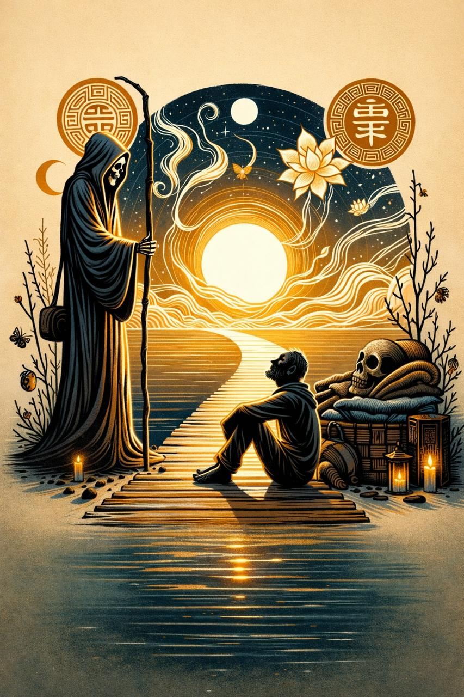

Cross-tradition meditations on the eternal questions
↓ Scroll to begin ↓
A meditation across traditions
"Try, by the frequent thought of death, to regard it not as a dreaded foe, but as a friend that frees the soul grown weary in the labors of virtue from this distressful life, and leads it to its place of recompense and peace."
— Tolstoy, War and Peace
The wisdom traditions speak of death through three voices. Each offers a different medicine for the same wound.
The Taoists see what we try to forget: all distinctions dissolve.
"Myriad beings differ in life but are the same in death. In life there are the wise and the foolish, the noble and the base; they differ in these. In death there are stench and rotting, decomposition and disintegration—they are the same in these."
— Lieh Tzu
Sage kings and fools alike return to dust. The hierarchy we spend our lives climbing vanishes. This is not meant to depress but to liberate—if death erases all rank, why exhaust yourself climbing?
The Epicureans and Stoics apply logic like a blade to fear.
"Death is nothing to us, since when we exist, death is not present to us; and when death is present, then we have no existence."
— Epicurus
You will never experience death. While you're here, it isn't. When it arrives, you won't be. The two of you will never meet. What, then, is there to fear?
Epictetus takes it further:
"What is death? A tragic mask. Turn it and examine it. See, it does not bite."
— Epictetus
We fear death the way children fear theater masks—from inexperience. Look closely. It has no teeth.
Here is where Tolstoy shines. Not death as neutral, not death as nothing—but death as kindness.
"A friend that frees the soul grown weary in the labors of virtue."
Stop on those three words: labors of virtue.
The constant effort to be good. The discipline to choose right when wrong is easier. The restraint when anger would feel better. The forgiveness when grudges are sweeter. The patience when snapping would bring relief.
Day after day after day.
This is the heaviest labor of all—the moral weight of trying to be good. And unlike physical labor, there is no retirement. The labors of virtue continue until the last breath.
And death? Death is the friend who arrives at the end of a long day's moral work and says: Enough. You've done enough. Rest now.
Krishnamurti names what underlies all fear of death:
"Living is a process of continuity in memory... me and my house, me and my wife, me and my bank account, me and my past experiences. In opposition to that there is death, which is putting an end to all that."
— Krishnamurti
We don't fear death. We fear the end of me.
"Either death is a state of nothingness and utter unconsciousness, or there is a change and migration of the soul. Now if you suppose there is no consciousness, but a sleep like the sleep of him who is undisturbed even by dreams, death will be an unspeakable gain."
— Socrates, in Plato's Apology
Both outcomes are good. There is no bad option.
"All things with form are momentary and fleeting, like flowing water and incense smoke. Know that leisure in this life is rare. That all on earth will die is certain—there's no escape."
— Milarepa
The certainty of death is not a burden. It is a focus. Knowing the story ends, how will you write the next chapter?
Sources: Tolstoy, Lieh Tzu, Epicurus, Epictetus, Osho, Krishnamurti, Plato, Marcus Aurelius, Milarepa
